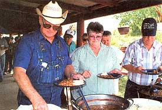

Agritourism
By the Mother Earth News editors
June/July 2002
green gazette
From Maine to Illinois, buses filled with schoolchildren and conventioneers visit farms to pick a bunch of lavender, go maple sugaring, harvest a personalized pumpkin, pet baby animals or take a picture of grandchildren running through a corn maze. It's called agritourism, and it is providing an alternative source of income for many families. The work is often seasonal and varies depending on what the farm or ranch has to offer tourists.
New York State provides advertising and promotion of agritourism along the 500-mile St. Lawrence Seaway Trail. Some Northeast farmers offer bed and breakfast accommodations for skiers or hikers. The western
United States with its vast mountain ranges and rugged natural scenery specializes in ranching, camping, trail rides, hunting and fishing, large animals and the chuckwagon.
After surveying Texas farm entertainment opportunities, Texas A&M University converted pan of its 2,700-acre ranch near Alice, Texas. Dubbed LaCopita Ranch, it's the first university-connected facility for training landowners and managers for agri-tourism. According to Miles Phillips, the program includes economic training and preparation for jobs on ranches where the owners may want to develop an ecotourism enterprise, but not manage it themselves.
LaCopita Ranch started offering tours this spring. Hiking through native "South Texas mixed brush," tourists see white-tailed deer, javelina, bobwhite quail, doves and numerous nongame species. LaCopita plans half-day guided tours of the ranch for groups, as well as overnight stays for groups and individuals, with bunkhouse accommodations, a short guided program and free time to explore the ranch by bicycle or on foot, and a chance to hear country music nearby.
-Katherine Adam
Resources:
Entertainment Farming and Agritourism
www.attra.org/attra-pub/entertain ment.html
(800) 346-9140
Miles Phillips, Extension Ecotourism
Specialist at LaCopita Ranch
mdphillips@ag.tamu.edu
agfacts.tamu.edu/-mphillips
(361)265-9203
The Farm & Ranch Recreation Handbook
uwadmnweb.uwyo.edu/RanchRecr
The MAiZE, corn maze makers
2361 S. Goodnight Drive
Springville, UT 84663
(801) 4891118
www.cornfieldmaze.com
La Mota Ranch
P.O. Box 373
Hebbronville, TX 78361
www.lamotaranch.com
|
 Tourists at La Mota Ranch in Texas enjoy by-the-day ranchwork and homecooked meals. |
 Agritourism can be an ongoing operation or limited to specific dates for larger crowds. |
 Although this maze covers more than 20 acres in Idaho, mazes on a much smaller scale also can be profitable. |